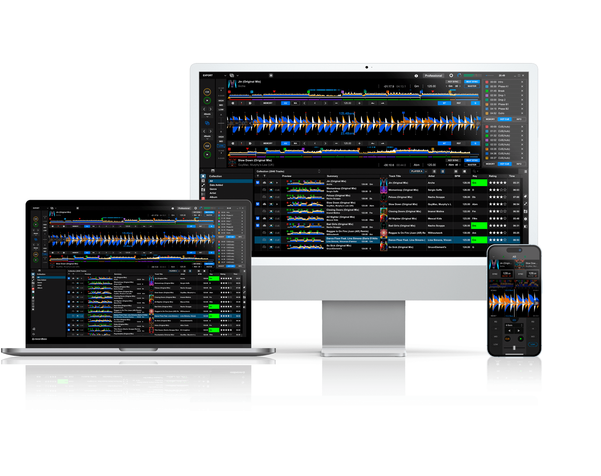
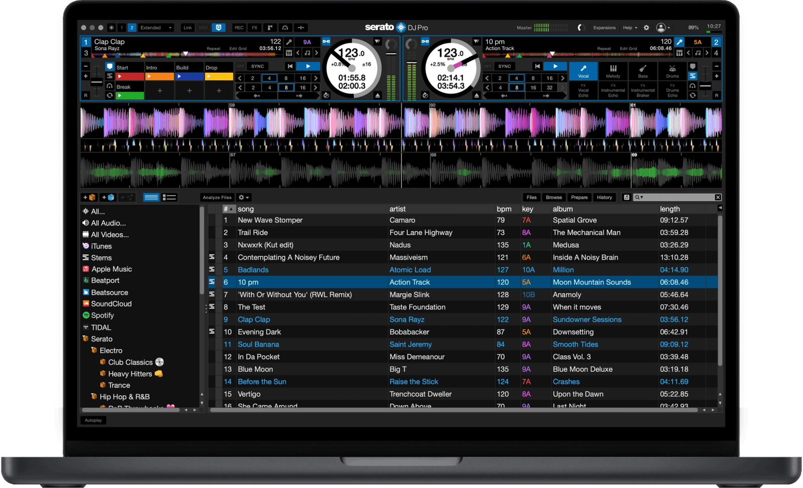
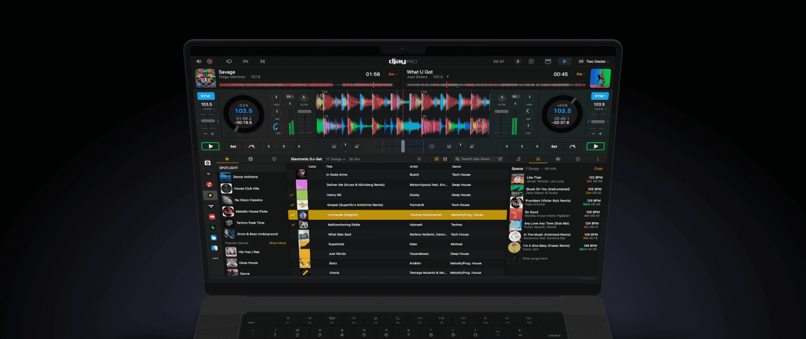
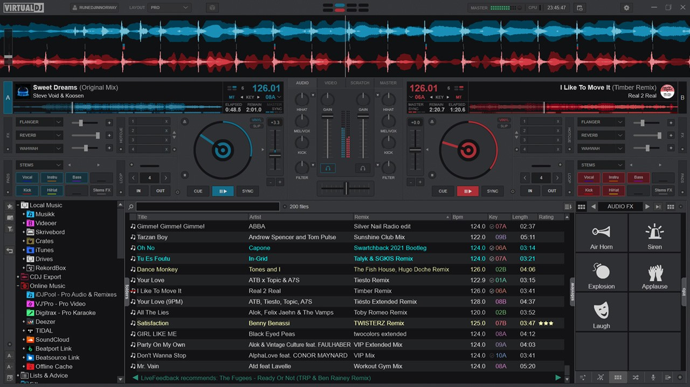

As a DJ, I know your Mac is the heart of your setup, so finding the right DJ software to manage your music library and perform live is the first and most important step to craft your perfect mix and learn how to mix music effectively.
Interested in DJ software? Check out my reviews for the Best AI DJ Software , and Best DJ Software for Beginners !
What You’ll Learn About Mac DJ Software
- A direct comparison of the top DJ software for live DJing on Mac.
- Which platform is best suited for your DJing style, from clubs to creative mixing.
- The difference between performance software and essential library management tools.
- How to use PulseDJ to manage the creative assets you need to build DJ sets.
The Best DJ Software for Mac in 2025
Let's cut to the chase. The best DJ software for you will vary depending on your goals and the DJ equipment you use. Your choice will also be heavily influenced by your specific DJ controller, as some pairings offer tighter integration than others. Here’s my breakdown of the top contenders in professional DJ software you should be looking at for your Mac.
PulseDJ - The AI Copilot

PulseDJ is something different to your standard DJ software. Rather than being used with hardware to mix tracks, PulseDJ runs on the side of your main mixing DJ software. It listens to the tracks you're playing, and then it suggests some of the best tracks to follow up with, based on analysis of millions of parties, playlists, and songs.
This helps you keep the party flowing, without needing to constantly scan through your library for the next song. Letting you focus more on the performance of DJing and less on the logistics.
The best part, is that it's completely free! Download PulseDJ today and level up your mixing game!

Pioneer DJ Rekordbox – The Club Ecosystem

The gold standard for club DJs, built to integrate seamlessly with Pioneer DJ hardware.
- Seamless integration with Pioneer DJ gear
- Excellent library management and key detection
- USB export workflow designed for club use
- Stable and reliable in live environments
- Best features tied to Pioneer hardware
- Limited appeal if you don’t plan to play in clubs
If your goal is to play in clubs, Rekordbox is essential. Developed by Pioneer DJ, whose gear dominates the booth in venues worldwide, this software doubles as both a performance tool and a meticulous library manager. Its standout feature is excellent key detection, making harmonic mixing easier and smoother.
You can set cue points, prepare own playlists, and load tracks with precision before your gig. Rekordbox shines in its preparation workflow - you can organize playlists on your Mac and quickly export them to a USB drive for instant compatibility with Pioneer hardware. For DJs using Pioneer gear, it offers unmatched integration and stability, ensuring your live show runs flawlessly with powerful audio management.
I use rekordbox as my main DJing software, and can't recomend it enough!
Serato DJ Pro – The Industry Standard for Scratch DJs

The go-to DJ software for hip-hop, turntablism, and open-format mixing.
- Best-in-class DVS (digital vinyl system)
- Excellent pad integration for hot cues and loops
- Rock-solid reliability
- Free version (Serato DJ Lite) available for beginners
- Paid upgrade required for full feature set
- Less focus on club export workflows compared to Rekordbox
For hip-hop, open-format, or scratch DJs, Serato DJ Pro is the clear favorite. Known for its rock-solid stability and ultra-tight hardware control, it has long been the go-to software for turntablists. Its pad integration makes triggering hot cues, loops, and samples feel intuitive and fast.
Serato’s DVS (Digital Vinyl System) is unmatched, giving DJs the authentic feel of mixing with timecode vinyl. While the free version Serato DJ Lite is a solid entry point, the true power comes with Serato DJ Pro, unlocking advanced features like live remixing, beat matching, and professional-grade performance tools.
Algoriddim djay Pro – The Apple Music Powerhouse

Award-winning Mac DJ software with sleek design and direct Apple Music integration.
- Native Apple Music streaming integration
- Clean, modern interface (Apple Design Award winner)
- Neural Mix lets you isolate vocals, drums, and instruments
- Built-in Automix mode for easy hands-free mixing
- Requires an Apple Music account and subscription
- Needs a strong internet connection for DJing directly from the cloud
- Less popular in professional club settings
Algoriddim’s acclaimed DJ software, djay Pro, is a standout choice for Mac users, offering a polished, user friendly interface and powerful tools. Its killer feature is direct Apple Music integration, which requires an active Apple Music account but gives DJs the ability to access millions of tracks and stream songs instantly, including all your favorite songs.
Neural Mix technology is a game-changer, allowing you to isolate or remove vocals, drums, and instruments in real-time. For casual or home setups, the Automix feature can handle transitions automatically, letting you focus on endless creativity.
Just note that if you’re DJing directly from Apple Music during a live gig, a rock-solid internet connection is non-negotiable. While not the standard in club booths, djay Pro remains one of the most innovative pieces of other DJ software for Mac.
VirtualDJ – The Feature-Packed All-Rounder

A versatile, all-purpose DJ platform with unmatched compatibility and extra features.
- Widest MIDI controller support of any DJ software
- Free version (home edition) is very capable
- Supports video mixing and karaoke
- Handles up to four decks and advanced effects
- Not as stylish or streamlined as competitors
- Can feel bloated with features some DJs won’t use
VirtualDJ is the Swiss Army knife of DJ software. It works with more MIDI controllers than any other option, making it one of the most flexible platforms out there. It’s feature-rich, offering everything from video mixing and karaoke support to advanced multi-deck setups.
You can easily load tracks, add cue points, and perform smooth beat matching across multiple decks. While it sometimes flies under the radar, its versatility is hard to beat, especially for DJs who want to experiment with live remixing and more than just music mixing.
The free version is powerful enough for most use cases, making it an excellent entry point for beginners, while professionals can unlock even more functionality with the paid edition.
The Best DJ Software at a Glance
To simplify, here’s a quick overview. Note that price points and features can change.
Software
Best For
Standout Feature
Hardware Integration
Streaming Support
Rekordbox
Aspiring Club DJs
Key detection / Ecosystem
Primarily Pioneer DJ hardware
TIDAL, Beatport, Beatsource
Serato DJ Pro
Scratch DJs, Turntablists
Digital Vinyl System (DVS)
Strong with Pioneer, Rane
TIDAL, Beatport, Beatsource
djay Pro
Mac Users, Streamers
Apple Music Integration
Wide range of controllers
Apple Music, TIDAL, Beatport
VirtualDJ
Mobile DJs, All-Rounders
Broadest hardware support
Works with most controllers
TIDAL, Beatport, Deezer
Beyond Mixing: The Tools That Power Your Sets
Your DJ software is for live performance, but the work of a modern professional DJ goes deeper. Many of us are also involved in music production, creating our own edits, and using tools like Ableton Live. This means managing a massive personal library of samples, plugins, and other apps - a huge headache when it comes to downloads, updates, and installations. This is where you need a different kind of tool.
Get Your Navigator – Introducing PulseDJ , Your AI Copilot
This is where PulseDJ changes the game. It’s not a replacement for Serato or Rekordbox; it’s an intelligent copilot that runs alongside them, designed to solve the biggest challenge every DJ faces. It looks at the track you’re playing and instantly suggests what to play next, based on data, not guesswork.
How It Supercharges Your Sets
I was skeptical at first, but the logic behind PulseDJ is brilliant. It gives you track suggestions powered by two incredible sources:
- Your Own DJ Brain: Pulse analyzes your entire play history from your main DJ software. It learns the combinations you naturally play, and suggests tracks that you have successfully mixed in the past.
- The Collective DJ Community: Your anonymous data is combined with data from over 19,000 other parties and millions of song pairs. This fine-tunes the AI, so you get suggestions that are proven to work in front of real crowds.
The suggestions are always relevant, staying within a +/- 10 BPM range of your current track, and a green bar shows you how relevant the track is to the energy you've built so far. It’s like having a seasoned pro looking over your shoulder, offering ideas without the pressure.
Seamless and Safe Integration
The best part is how seamlessly PulseDJ works with your existing setup. It’s compatible with Serato, Rekordbox, Traktor, VirtualDJ, and djay Pro.
It never interferes with your main software. It simply reads the history files your software creates to know what you’re playing. You are always in 100% control of your mixing. It doesn't need a constant internet connection during your set, either. After an initial analysis, it builds a local database so you can use it completely offline.
Start DJing Smarter, Not Harder
The best DJ software setup for a Mac in 2025 isn't just one app. It’s the combination of a powerful performance engine and an intelligent AI copilot. While other DJ software focuses only on the technicals, PulseDJ helps with the art of selection.
Stop guessing what the crowd wants to hear next. Let your own history and the experience of thousands of DJs guide you. Since PulseDJ is currently free during its Beta, there's no reason not to add this secret weapon to your setup.
Download PulseDJ for your Mac today and unlock a new level of confidence behind the decks.
‹ The Best DJ Auto Mixer Software